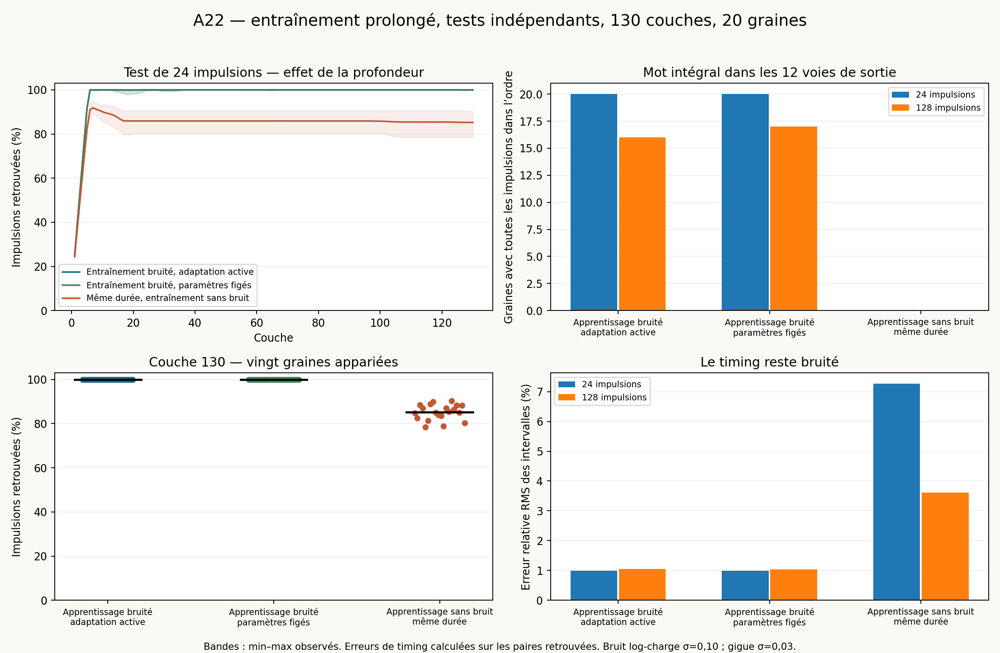

La préparation observée est obtenue pour 20 graines sur 20 : 17 graines à 512 impulsions, 2 graines à 1024 impulsions, 1 graines à 2048 impulsions. Après cette préparation, 20 graines sur 20 retrouvent toutes les 24 impulsions dans l’ordre sur les douze voies de sortie avec adaptation active ; 20 sur 20 avec paramètres figés. Pour le mot indépendant de 128 impulsions, ces nombres sont 16 et 17 sur 20.
Une transmission sans perte ne signifie pas une conservation exacte des intervalles : les erreurs de timing sont mesurées séparément. Ces résultats sont ponctuels, pour vingt graines et un protocole précis.
| Entraînement / test | Impulsions retrouvées à 130 | Mot intégral sur 12 voies | IC exact à 95 % de cette probabilité | Erreur RMS relative moyenne* |
|---|---|---|---|---|
| Bruité ; adaptation active au test | 100 % (min 100, max 100) | 20 / 20 | [83.16 %, 100 %] | 0.9933 % |
| Bruité ; gains et récupération figés au test | 100 % (min 100, max 100) | 20 / 20 | [83.16 %, 100 %] | 0.9876 % |
| Sans bruit ; durée appariée ; adaptation active au test | 85.21 % (min 78.47, max 90.28) | 0 / 20 | [0 %, 16.84 %] | 7.266 % |
* Moyenne entre graines de la RMS relative des intervalles entre labels source consécutifs retrouvés une fois ; les pertes restent comptées séparément. Même la transmission intégrale des labels n’impose pas une erreur temporelle nulle.
Avec 128 impulsions d’entraînement bruité, la campagne précédente retrouvait en moyenne 1.372 % des impulsions à la couche 130. Les mêmes vingt graines et le même champ de bruit des pulses de test identifiables sont réutilisés dans la comparaison principale. L’entraînement prolongé est une intervention différente, dont la durée est choisie sur les données d’entraînement uniquement.
| Entraînement / test | Impulsions retrouvées à 130 | Mot intégral sur 12 voies | IC exact à 95 % de cette probabilité | Erreur RMS relative moyenne* |
|---|---|---|---|---|
| Bruité ; adaptation active au test | 99.93 % (min 99.48, max 100) | 16 / 20 | [56.34 %, 94.27 %] | 1.049 % |
| Bruité ; gains et récupération figés au test | 99.96 % (min 99.61, max 100) | 17 / 20 | [62.11 %, 96.79 %] | 1.042 % |
| Sans bruit ; durée appariée ; adaptation active au test | 96.35 % (min 91.8, max 98.18) | 0 / 20 | [0 %, 16.84 %] | 3.618 % |
Sur les 30 720 réponses attendues dans les vingt graines, le test long avec adaptation active présente 12 labels absents et 8 labels dupliqués (8 émissions supplémentaires de duplication). Avec paramètres figés : 12 labels absents et 0 labels dupliqués. La fraction retrouvée exige une réponse unique ; elle pénalise donc à la fois les absences et les duplications. Les étiquettes ambiguës, les violations d’ordre et les doublons sont conservés dans summary.csv.

Aux premières couches, seules certaines voies sont accessibles depuis la source ; la montée initiale reflète l’élargissement spatial du front.
Le contrôle entraîné sans bruit utilise exactement la même durée que son partenaire bruité, puis les mêmes perturbations de test. Une différence entre ces groupes isole l’effet de l’exposition au bruit pendant l’apprentissage, pour cette durée et ces réalisations. Le contrôle figé repart de l’état appris sous bruit, puis bloque ż et ḃ : il distingue la tenue de cet état d’une réparation en ligne pendant le test. Chaque évaluation repart d’une copie indépendante du même état appris ; le test de 128 pulses ne prolonge pas celui de 24 et n’hérite pas de son adaptation.
Cette campagne ne répète pas les ablations de la garde d’apprentissage sous protection avec un entraînement prolongé. Elle ne suffit donc pas à établir la nécessité de cette garde. Elle n’est pas non plus une preuve d’invariance pour toute entrée future ni pour toute réalisation physique.
Anneau de douze voies, trois parents, 130 couches. Paramètres physiques nominaux et équations du simulateur ponctuel fourni ; gains initiaux (0,3 ; 1,2 ; 0,3), q=0,1, b=0,08. Source extérieure sur la seule voie 0, impulsions canoniques espacées de 8. Bruit indépendant par connexion et impulsion : amplitude exp(0,1 Z − 0,005), Z gaussien standard ; gigue uniforme centrée d’écart-type 0,03 ; délai moyen 0,1, donc délais toujours positifs. Le coefficient de variation de l’amplitude vaut 10,025 %.
La politique d’entraînement est fixée avant l’évaluation : essayer 512 pulses, puis 1 024 et 2 048 si nécessaire. On s’arrête lorsque les 64 derniers labels source sont retrouvés exactement une fois sur chacune des douze voies de sortie, sans émission ambiguë supplémentaire dans la fenêtre terminale observée. Le contrôle conservateur des ambiguïtés inclut les événements non étiquetés postérieurs au début source de cette fenêtre. L’ordre des labels est audité dans PREPARATION_AUDIT.json. Les décisions ne consultent aucun test ; une graine non préparée à la limite serait conservée et évaluée, jamais exclue.
Il s’agit d’une préparation observée sur une fenêtre finie, sans preuve de gains invariants ni garantie sur l’avenir. Les tentatives infructueuses sont conservées dans output_native/. Le contrôle sans bruit a une durée appariée par graine ; sa trajectoire d’entraînement est déterministe et peut être partagée entre graines pour une même durée.
Après le dernier pulse source, on conserve le silence de 3 080 unités utilisé dans l’expérience à 128 pulses. Chaque cellule termine ses événements d’entraînement et conserve ses gains et b. Sa charge prête est propagée analytiquement pendant l’attente par q=r+(q_fin−r) exp(−κ Δt), sans remplacement des gains ni de b. Les auxiliaires ont achevé leur cycle et la principale est READY. La séparation est contrôlée contre une simulation continue ; elle ne sert pas à réinitialiser artificiellement l’apprentissage.
Les tests sont des mots irréguliers aux intervalles 20 × (1 ; 1,1 ; 1,05 ; 1,2 ; 1 ; 1,15), répétés. Les lois du bruit sont les mêmes qu’à l’entraînement. Les tirages utilisent des champs indexés par graine, couche, cellule, port, étiquette et occurrence. Les 128 premiers pulses d’entraînement et les 24 pulses du test principal reprennent les clés de la campagne précédente. Les pulses supplémentaires d’entraînement et le test long utilisent des espaces de clés distincts, sans réutiliser les perturbations d’entraînement pour le test. Les pulses non étiquetés sont indexés par ordinal ; un appariement de cohorte identifiable ne leur est pas attribué.
La fraction retrouvée utilise le dénominateur 12 × longueur du mot. Un mot intégral exige les labels attendus une fois, dans le bon ordre, sans émission supplémentaire, sur les douze voies. La graine est l’unité statistique : les voies et les impulsions d’un même réseau ne sont pas des répétitions indépendantes. Les intervalles exacts à 95 % de la probabilité de mot intégral sont de Clopper–Pearson ; les intervalles bootstrap des moyennes et différences appariées figurent dans summary.json. Vingt succès sur vingt donnent encore une borne inférieure de probabilité d’environ 83,2 % à 95 %, pas une garantie universelle.
Les deux mots d’évaluation et les deux règles au test réutilisent les mêmes états appris ; ils ne constituent pas quatre ensembles indépendants de vingt réseaux. La sélection de durée définit une politique adaptative ; un résultat après cette politique ne prouve pas que 512 pulses suffisent à toute graine. Aucun bruit de charge interne q additionnel, aucune autre topologie, aucun autre niveau de bruit et aucune incertitude sur les paramètres physiques ne sont explorés ici. La réserve E n’est pas intégrée, conformément au kit ponctuel. Le moteur certifié A22 n’est jamais importé.
La version Python provient du simulateur fourni, avec le noyau des ablations déjà contrôlé sur 21 302 événements historiques. Le seul changement de ce noyau est le paramétrage de la date d’observation. La séparation entraînement/test retrouve les nombres et étiquettes de la simulation continue sur la graine 0 à 128 pulses, adaptation active et paramètres figés : erreur maximale de date 3.82e-11, erreur maximale de gain 1.19e-10.
Une traduction C++ accélère uniquement la boucle ponctuelle, pour trois ports nominaux et des impulsions exponentielles canoniques avec amplitude bruitée. Elle utilise des racines par bissection et les mêmes priorités numériques d’événements que le simulateur Python ; ce n’est pas le moteur certifié. Douze tests locaux couvrent états frais/appris et gel actif/inactif. Sur l’entraînement complet de 512 pulses de la graine 0 et ses quatre tests, elle retrouve les mêmes nombres et étiquettes aux points contrôlés, avec un écart maximal de date de 2.63e-10 et de gain de 3.52e-09. Les états d’entraînement des 1 560 cellules et les profils des 130 couches sont comparés. Les sources C++, le code Python et les vérifications sont fournis ; aucune qualification ni validation par intervalles n’est revendiquée.
| Graine | Impulsions d’entraînement | Préparation observée | 24 pulses, actif / figé | 128 pulses, actif / figé | Sans bruit à l’entraînement : 24 / 128 |
|---|---|---|---|---|---|
| 0 | 512 | Oui | 100 % / 100 % | 100 % / 100 % | 84.72 % / 94.27 % |
| 1 | 2048 | Oui | 100 % / 100 % | 100 % / 100 % | 82.64 % / 97.27 % |
| 2 | 512 | Oui | 100 % / 100 % | 100 % / 100 % | 87.15 % / 97.85 % |
| 3 | 512 | Oui | 100 % / 100 % | 100 % / 100 % | 85.42 % / 96.88 % |
| 4 | 512 | Oui | 100 % / 100 % | 100 % / 100 % | 90.28 % / 97.79 % |
| 5 | 1024 | Oui | 100 % / 100 % | 100 % / 100 % | 86.46 % / 95.7 % |
| 6 | 512 | Oui | 100 % / 100 % | 100 % / 100 % | 88.19 % / 96.55 % |
| 7 | 512 | Oui | 100 % / 100 % | 100 % / 100 % | 85.07 % / 95.9 % |
| 8 | 512 | Oui | 100 % / 100 % | 100 % / 100 % | 88.19 % / 94.86 % |
| 9 | 512 | Oui | 100 % / 100 % | 99.48 % / 100 % | 80.21 % / 95.77 % |
| 10 | 512 | Oui | 100 % / 100 % | 100 % / 100 % | 88.54 % / 97.2 % |
| 11 | 512 | Oui | 100 % / 100 % | 100 % / 100 % | 87.15 % / 93.68 % |
| 12 | 1024 | Oui | 100 % / 100 % | 100 % / 100 % | 78.47 % / 97.27 % |
| 13 | 512 | Oui | 100 % / 100 % | 100 % / 100 % | 81.25 % / 98.18 % |
| 14 | 512 | Oui | 100 % / 100 % | 99.93 % / 99.93 % | 88.89 % / 91.8 % |
| 15 | 512 | Oui | 100 % / 100 % | 100 % / 100 % | 89.93 % / 97.27 % |
| 16 | 512 | Oui | 100 % / 100 % | 99.61 % / 99.61 % | 85.07 % / 97.14 % |
| 17 | 512 | Oui | 100 % / 100 % | 99.67 % / 99.67 % | 84.03 % / 97.46 % |
| 18 | 512 | Oui | 100 % / 100 % | 100 % / 100 % | 83.68 % / 97.2 % |
| 19 | 512 | Oui | 100 % / 100 % | 100 % / 100 % | 78.82 % / 96.94 % |
Python 3, NumPy, SciPy, Matplotlib et g++ (C++17). Depuis ce dossier : python build_kernel.py, python build_native.py, python native_run.py --workers 8, python control.py, python validate.py, python validate_native.py, puis python report.py. Les résultats présents sont réutilisés ; déplacer output_native/ pour recalculer. Le solveur Python reste disponible via python run.py. Le pilote Python archivé sert d’oracle et n’est pas compté comme une graine supplémentaire. Le ZIP source fourni, les références antérieures nécessaires et les résultats de validation sont inclus.
Les listes d’émissions de test sont conservées aux couches 18, 68, 80, 100 et 130 ; les profils métriques et les états avant/après sont conservés pour toutes les couches. Les checkpoints d’entraînement contiennent les états finaux, les 64 dernières cohortes et les empreintes des listes complètes, qui sont reproductibles à partir du code. Tous les résultats sont exploratoires et ponctuels.